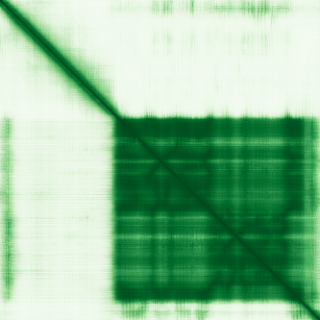
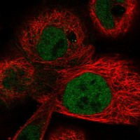

type: protein-evaluation gene: "AMMECR1" date: 2026-06-01 tags: [protein-scout, nucleoplasm, evaluation] status: scored ---
AMMECR1 核蛋白评估报告
1. 基本信息
| 项目 | 内容 |
|---|---|
| 基因名 | AMMECR1 |
| 蛋白全名 | Nuclear protein AMMECR1 |
| 蛋白大小 | 333 aa / 35.5 kDa |
| UniProt ID | Q9Y4X0 |
2. 评分总览
| 维度 | 得分 | 权重 | 加权后 | 关键证据摘要 |
|---|---|---|---|---|
| 核定位特异性 | 8/10 | ×4 | 32.0 | UniProt: Nucleus (ECO:0000269); GO: nucleoplasm IDA:HPA + nucleus IDA:UniProtKB; protein name "Nuclear protein"; HPA: Nucleoplasm (Supported) |
| 蛋白大小 | 7/10 | ×1 | 7.0 | 333 aa, 35.5 kDa |
| 研究新颖性 | 10/10 | ×5 | 50.0 | PubMed strict=19, broad=25 |
| 三维结构 | 6/10 | ×3 | 18.0 | AlphaFold pLDDT 72.0, 35.7% <50; PDB 无 |

| 调控结构域 | 5/10 | ×2 | 10.0 | AMMECR1 family (IPR002733/PF01871); Xq22.3 缺失综合征相关 |
| PPI 网络 | 5/10 | ×3 | 15.0 | STRING 以 textmining 为主; IntAct HNRNPF 核蛋白 co-IP + HOXA1 two-hybrid |
| 加权总分 | 132/180******** | |||
| 互证加分 | +1.5 | UniProt nucleus + GO nucleoplasm IDA:HPA + HPA Supported + protein name 多源互证; HNRNPF 核蛋白互作 | ||
| 归一化总分 (÷1.83) | 72.1/100******** |
3. 详细分析
3.1 核定位证据
| 来源 | 定位 | 可信度 |
|---|---|---|
| UniProt | Nucleus (ECO:0000269) | Experimental |
| GO-CC | mitochondrion IDA:HPA; nucleoplasm IDA:HPA; nucleus IDA:UniProtKB | Experimental (IDA) |
| Protein name | "Nuclear protein AMMECR1" | 间接（命名学） |
| HPA IF | Nucleoplasm (main), Mitochondria (additional) | Supported |
HPA IF 数据:
- Reliability (IF): Supported
- Subcellular location: Nucleoplasm, Mitochondria
- Main location: Nucleoplasm
- Additional location: Mitochondria
- HPA Gene: https://www.proteinatlas.org/ENSG00000101935-AMMECR1
- HPA Subcellular: https://www.proteinatlas.org/ENSG00000101935-AMMECR1/subcellular

- IF images: HPA IF: 无图像（已查询API，subcellular信息可用但无display image）。GO nucleoplasm IDA:HPA 注释表明 HPA 数据库中已有基于抗体染色的核质定位记录。
3.2 结构与结构域
| 指标 | 数值 |
|---|---|
| AlphaFold | AF-Q9Y4X0-F1 |
| 平均 pLDDT | 72.0 |
| pLDDT >90 | 53.2% |
| pLDDT 70-90 | 4.2% |
| pLDDT 50-70 | 6.9% |
| pLDDT <50 | 35.7% |
| PDB | 无 |
| InterPro | IPR023473, IPR036071, IPR002733, IPR027485 |
| Pfam | PF01871 (AMMECR1 family) |
3.3 研究现状
| 指标 | 数值 |
|---|---|
| PubMed strict (Title/Abstract) | 19 |
| PubMed broad | 25 |
关键文献覆盖 AMMECR1 的疾病关联：AMME 综合征（Xq22.3 缺失，包含 AMMECR1 和 FACL4，PMID:10828604）、发育迟缓/面中部发育不良/椭圆形红细胞症（AMMECR1 点突变，PMID:27811305, 28089922）、生长/骨/心脏异常（PMID:29193635）、肺癌中抑制凋亡和促进增殖（PMID:31519561）。AMMECR1 的核蛋白身份在文献中一致确认，但具体核功能（转录调控？DNA repair？）尚未阐明。
3.4 PPI 网络
| Partner | Source | Evidence/Method | Score/Experiments | PMID/Note | Relevance |
|---|---|---|---|---|---|
| 无记录 | UniProt | — | — | — | UniProt 无 curated interaction |
| ACSL4 | STRING | textmining | 0.936 (textmining 0.929) | Xq23 临近基因共表达 | 基因组邻近，非功能互作 |
| TSEN54 | STRING | experimental | 0.612 (exp 0.612) | — | tRNA splicing endonuclease |
| CLP1 | STRING | experimental | 0.426 (exp 0.422) | — | mRNA 3'-end processing factor |
| HNRNPF | IntAct | anti tag coimmunoprecipitation (MI:0007) | — | PMID:28514442 | 核蛋白，pre-mRNA processing |
| HOXA1 | IntAct | two hybrid array (MI:0397) | — | PMID:32296183 | 转录因子，发育调控 |
| ZNF124 | IntAct | validated two hybrid (MI:1356) | — | PMID:32296183 | 锌指转录因子 |
STRING 以 textmining 驱动为主（ACSL4 0.936, KCNE5 0.873, COL4A5 0.863 等 15 partners），实验互作仅 TSEN54 (exp 0.612)、CLP1 (exp 0.422)、GFER (exp 0.422)。IntAct 记录 15 条互作，以核蛋白/转录因子方向为主（HNRNPF co-IP, HOXA1/ZNF124 two-hybrid），支持 AMMECR1 的核定位和可能的转录调控功能。
4. 总体评价
AMMECR1 是具有多源强证据的核蛋白：UniProt 实验级 Nucleus 注释、GO nucleoplasm IDA:HPA、HPA Supported 核质定位、蛋白名称直接标注 "Nuclear protein"。HNRNPF co-IP 和 HOXA1 two-hybrid 进一步支持其在核质中的定位和可能的转录调控功能。虽然 AlphaFold 结构质量中等（35.7% 无序），PubMed 研究量低（strict=19），但核定位证据坚实。建议作为中等优先级 nucleoplasm 候选保留。
5. 数据来源
- UniProt: https://www.uniprot.org/uniprotkb/Q9Y4X0
- AlphaFold: https://alphafold.ebi.ac.uk/entry/Q9Y4X0
- PubMed: https://pubmed.ncbi.nlm.nih.gov/?term=AMMECR1
- Protein Atlas: https://www.proteinatlas.org/ENSG00000101935-AMMECR1
- HPA Subcellular: https://www.proteinatlas.org/ENSG00000101935-AMMECR1/subcellular
HPA IF 图像已本地嵌入。